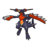
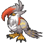
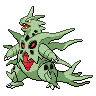
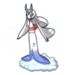

Same six. 15-2 and 0-8.
2027-season Regionals (Sep–Oct 2026), read through 3,004 open team sheets from Frankfurt, Louisville and Nice.


Same six species, different set packages
18 players brought these six, and every one carried both Raichunite and Golisopite. The Raichu X lists also differed in Sneasler's item and Archaludon's moves, and no Raichu Y list ran Snarl.
7-17-16-26-25-35-35-34-44-44-44-42-44-34-44-44-42-50-8Without the single 0-8, Raichu Y is 47.4% (18-20). Still behind X, by less.
A week earlier, both worked
75% → 63%68% → 39%At Louisville a Raichu Y copy went 8-0 on Day 1. Then everyone saw the list.
 Choice Scarf Garchomp13 → 27%Snarl Archaludon18 → 47%
Choice Scarf Garchomp13 → 27%Snarl Archaludon18 → 47% Mega Charizard Y, whole field18 → 25%
Mega Charizard Y, whole field18 → 25%Why Raichu X held
172Sneasler178Raichu X200Raichu Y
203Modest Mega Chomp Z253Scarf Garchomp260Basculegion-F, rain344Seed SneaslerSpeed stats with max Speed investment; spreads aren't on open sheets. At Nice, 144 Mega Garchomp Z sheets were Modest and 47 Timid.
2× speed
Mega Evolving gives Raichu Electric Surge. The terrain pops the Seed and Unburden kicks in, so Sneasler outruns Scarf Garchomp, then Swords Dances.
No sleep
Electric Terrain stops grounded Pokémon falling asleep. In 40 engine runs it blocked Venusaur's Sleep Powder 27 times; under Raichu Y the same move put Sneasler to sleep 27 times.
Snarl-proof
Volt Tackle and Close Combat are physical, so Snarl doesn't touch them. Zap Cannon is special.
Female beat male Basculegion, both weeks
Day 1 match wins for teams running Pelipper rain. No rain Basculegion-F teams at Frankfurt.
| Louisville | Nice | |||||
|---|---|---|---|---|---|---|
| Overall | vs Rillaboom | vs Intimidate | Overall | vs Rillaboom | vs Intimidate | |
| Female | 59.8% 137-92 | 64.9% 61-33 | 63.1% 89-52 | 52.5% 107-97 | 51.1% 48-46 | 50% 56-56 |
 Male Male | 50% 68-68 | 52.3% 34-31 | 40.6% 28-41 | 43.8% 28-36 | 48.6% 17-18 | 47.7% 21-23 |
The female attacks specially with Swift Swim, so Intimidate can't lower its damage and Ice Beam hits Rillaboom super-effectively. The male is physical, and Rillaboom resists Wave Crash. At Louisville that showed: the female won 65% against Rillaboom teams. At Nice both forms sat near 50% against Rillaboom and Intimidate teams, but the female still won more overall. A sheet only says the opponent had Rillaboom, not that it was brought.
Inherited, then upgraded

The rain core, with Mega Swampert or Floette.
+ Archaludon. Raichu X with Seed Sneasler already on 3 teams (best: 33rd).
Snarl on Archaludon, Feint on Raichu, Poison Jab on Sneasler. Raichu X teams with Snarl: 29-11, and 22-10 without the winner. Without Snarl: 30-24. A package worth testing, not proof the move did it.
Target on your back
236 teams48.0%38 teams52.7%The most-used Mega at Nice was the one everyone prepped for: 42% of teams had a Garchomp, and Ground blocks Zap Cannon.
Nice Gengars ran one Perish Song

 One Perish Song user61.8%
One Perish Song user61.8% Two Perish users55.2%
Two Perish users55.2%Mega Gengar teams at Nice did better with one Perish Song user than with two. Soundproof partners: 13% → 20% → 47% of Gengar teams.
Loops exist, and sheets only nudge

beat
67-46
39-33No plan here beats every other. The middle edge is close: treat it as a lean, not a lock.
Given only the two team sheets, a model picked the winner 54 times in 100. Sheets carry a little signal; everything else in a match carries the rest. How it was measured.